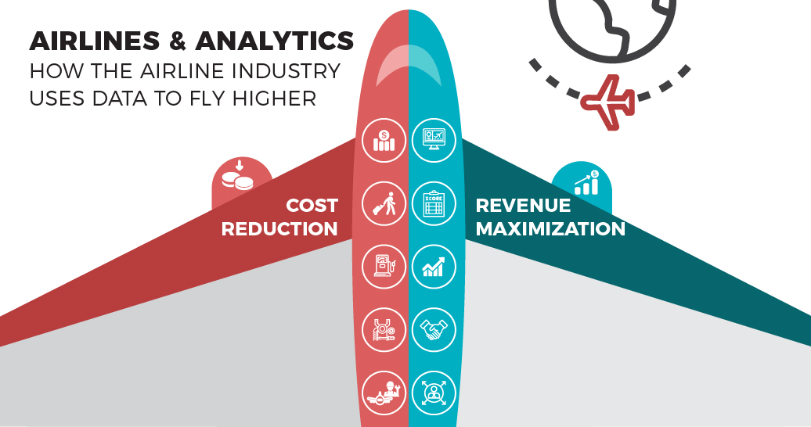
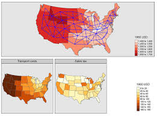

Most companies don't have a data problem. They have a trust and access problem.
I'm Surya Teja Pidakala, a Senior Data Analyst at Arlo. I'm helping build a data intelligence layer on Databricks where anyone can ask a question and get a trusted answer, with the metric definitions already built in and the same result every time.
Five-plus years across Arlo, Capital One, GanaIT and Salesforce, focused on customer lifecycle, churn and retention.
What the work has changed
Four results I can point to, and where they came from.
| Result | Where | How |
|---|---|---|
| 9% lift in feature engagement and upsell conversions | Capital One | Designed, ran and evaluated A/B tests with product on digital credit products. |
| ~15% of at-risk subscribers recovered | GanaIT | Analyzed drop-off patterns and built targeted re-engagement strategies. |
| 40% lower reporting latency | NSIC | Automated pipelines and modular dashboard components. |
| One definition of MAU and retention across regions | Salesforce | Reusable SQL models for MAU, feature retention and engagement decay. |
Experience
Most recent first.
-
Arlo Technologies
Dec 2025 to presentSenior Data Analyst, Milpitas, CA
- Own experimentation and KPI reporting across product and marketing, covering growth, churn and customer behavior for Arlo's subscription platform.
- Maintain Tableau dashboards that senior leadership uses for roadmap and investment decisions.
- Build Databricks pipelines for analytics-ready transformations, quality validation and experimentation workflows.
- Connect Amplitude and SFMC data to link behavioral signals with subscription performance and campaign results.
-
Capital One
Jan 2025 to Nov 2025Senior Data Analyst, contract via Ascendion. Subscription Analytics Engine for Digital Credit Products
- Drove a 9% lift in feature engagement and upsell conversions through A/B tests designed with product.
- Built Looker dashboards tracking MAU, LTV, ARPU and churn for premium subscription products, used by product, marketing and finance.
- Led behavioral analysis to find engagement patterns and churn indicators across the digital subscriber base.
- Worked with data engineering to strengthen event tracking schemas and QA pipelines.
-
GanaIT
Aug 2023 to Dec 2024Data Analyst, Tampa, FL
- Recovered nearly 15% of at-risk subscribers through drop-off analysis and targeted re-engagement.
- Built SQL cohort models for customer lifetime value and subscription-tier segmentation across banking service products.
- Designed Tableau and Power BI dashboards for user activity, revenue trends and churn, aligned to finance and marketing reporting cycles.
- Ran A/B and pre/post analysis on feature rollouts and pricing changes to guide risk decisions.
-
Salesforce
Jun 2020 to Jul 2022Data Analyst, India
- Built event tracking pipelines with Spark, Hive and Airflow to capture clickstream data across Salesforce's global partner ecosystem.
- Developed reusable SQL models for MAU, feature retention and engagement decay, standardizing KPI definitions across regional teams.
- Created Tableau and Presto dashboards on partner engagement and feature adoption for product and marketing leads.
- Improved experimentation frameworks and funnel QA, making metrics more consistent across global outputs.
-
National Small Industries Corporation (NSIC)
Jan 2019 to May 2020Data Analyst, Hyderabad, India. Micro-Finance Product Retention and Risk Insights Platform
- Designed Power BI dashboards tracking borrower retention, repayment behavior and cross-cycle revenue across micro-loan products.
- Developed SQL automation that generates churn-risk alerts and recovery flags for loan officers.
- Cut reporting latency by 40% through automated pipeline integration and modular dashboard components.
-
Visakhapatnam Steel Plant
May 2018 to Jun 2019Data Developer, Visakhapatnam, India
- Analyzed plant data with statistical methods and machine learning models to identify trends.
- Redesigned the inventory database, tuned indexes and stored procedures, and built a DTS package to migrate data between SQL Server, Access and Excel.
Projects
Graduate coursework and independent analysis. Each links to a short summary and the full report.
-
Effects of privatization on space missions
How launch failure rates, cost per kilogram and mission volume changed as private companies entered the industry.
-
Bankruptcy prediction with machine learning
A Random Forest model that scores a firm's bankruptcy risk, built for the insurance industry's risk assessment problem.
-

Airline route profitability analysis
Ranked round-trip routes by demand, profit and punctuality, then ran breakeven analysis on the five recommended for investment.
-

Car price and mileage by state and region
ANOVA and Tukey HSD tests on used-car listings to compare asking price and odometer readings across U.S. states and regions.
Education
University of South Florida
Master's, Business Analytics and Information Systems
Aug 2022 to Dec 2023
Geethanjali College of Engineering and Technology
B.Tech, Electronics and Communication
2016 to 2020
Tools
Platforms and languages: Databricks, Spark, SQL, Python, R
BI and analytics: Tableau, Looker, Power BI, Amplitude
Pipelines: Airflow, Hive, Presto, SFMC
Credentials
Certifications
- Finance Foundations
- Lloyds Banking Group: Data Science
- Generative AI
- Excel: Advanced Formulas and Functions
- Certified Tester ISTQB Foundation Level (CTFL)
Honors and awards
- On the Spot Award
- Best Team Award
- IEEE Xtreme 24-hour competitive programming Top 50 teams nationally, top 500 globally
Publication
- "Smart Extension Cord Using Node MCU" PENSEE Journal, Vol 51, Issue 04 (2021). Acceptance certificate
Let's talk
Always glad to talk semantic layers, self-serve analytics and retention. Send a note and I'll reply by email.